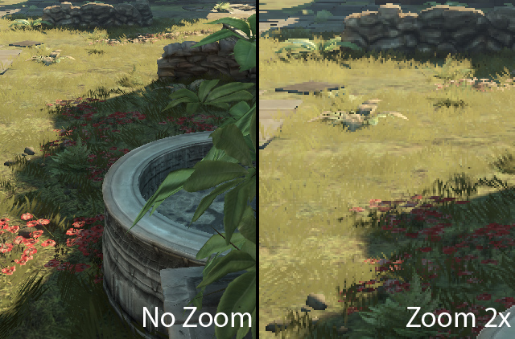
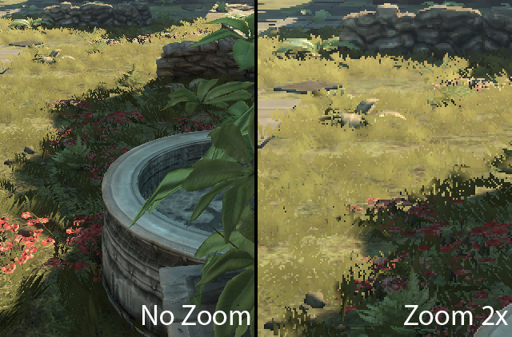

UDN
Search public documentation:
SoftMasked
日本語訳
中国翻译
한국어
Interested in the Unreal Engine?
Visit the Unreal Technology site.
Looking for jobs and company info?
Check out the Epic games site.
Questions about support via UDN?
Contact the UDN Staff
中国翻译
한국어
Interested in the Unreal Engine?
Visit the Unreal Technology site.
Looking for jobs and company info?
Check out the Epic games site.
Questions about support via UDN?
Contact the UDN Staff
UE3 Home > Materials & Textures > SoftMasked Blend Mode
SoftMasked Blend Mode
Overview
 Notice the soft grass and how the leafs appear anti-aliased where the texture defines the border. Additionally ambient occlusion appears to be nicer as further grass contributes less to the depth buffer and therefore has less noisy SSAO artifacts. This is the same content with the classic Masked material blend mode:

How to activate and tweak
 The method can be activated simply by setting the Blend Mode in the Material Editor to Blend_SoftMasked. For good results, it is best to change the Opacity Mask Clip Value to a value near 0.7 (useful range is from 0.4 to 0.9). Higher values allow to use more of the soft transition but it also reduces the amount that is rendered in the classic Masked way (with the correct pixel depth for fog and Depth of Field).
The method can be activated simply by setting the Blend Mode in the Material Editor to Blend_SoftMasked. For good results, it is best to change the Opacity Mask Clip Value to a value near 0.7 (useful range is from 0.4 to 0.9). Higher values allow to use more of the soft transition but it also reduces the amount that is rendered in the classic Masked way (with the correct pixel depth for fog and Depth of Field).
Good content
- Make sure the mask is visible (RGB or alpha channel)
- Change Image Size to 400% (horizontal and vertical). Make sure Resample image is set to bilinear.
- Optionally blur the image a bit (e.g. Gaussian blur 2.5 pixel)
- Apply Adjustments Threshold, tweak depending on content (In Masked this was tweaked with the Opacity Clip Mask value.)
- Change Image Size to 25% (horizontal and vertical). Make sure Resample image is set to bilinear.
Performance
GPU
Very little extra pixel shader instructions are required. The geometry needs to be rendered twice (EarlyZ and Base pass, possibly shadowmaps). The blending operation with the frame buffer should be neglectable on Xbox360 but might be noticeable on other hardware when using short shaders. For the base pass the objects needs to be rendered sorted from back to front.CPU
The required sorting adds additional overhead to the CPU rendering cost (sorting function, more state changes). This is view dependent and is worse when multiple different materials needs to be rendered interleaved.Limitations
- The current implementation is at an early stage to evaluable the potential and to be able to use it on Xbox360. Further improvements can solve some of the limitations but the additional cost might be a noticeable performance drop. A Xbox360 like preview for PC would be useful and could be one of next improvements.
- The current implementation only works well on Xbox360 and there only for ambient lighting and one dominant light (sun)!
- On PC it only works for the ambient lighting. Overlapping soft masked borders affected by the dominant light appear to be too bright. This is very noticeable on grass and less on less occluding objects.
- It's currently considered unsupported for Playstation 3 and shader model 4.
- SoftMasked rendering doesn't support more lights than ambient and one directional light
(All SoftMasked objects need to be rendered in single pass otherwise the border appear to be too bright, as it can be seen on PC). - Shadows are only supported on XBox360 and only from the single dominant light.
- Fog
SoftMasked only affects the depth buffer only in areas of maximum opacity. As the fog rendering is based on the depth buffer some pixels become fogged too much. Tweaking the Opacity Mask Clip value to be smaller helps but then the result appears to be less soft. This problem can be seen in the following image (first is SoftMasked, second is Masked).